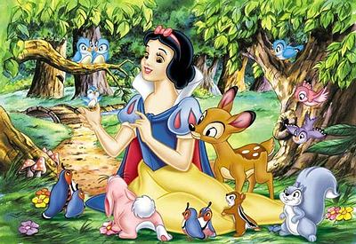

Snøhvit
De syv dvergene

I snøhvit er det syv dverger som hjelper henne fra første møte. Når Snøhvit rømmer, finner hun trygghet hos syv dverger. De syv dvergene er Blygen, Brille, Minsten, Sinnataggen, Lystig, Søvnig og Prosit. Alle har fått navnen ut i fra personlig kjennetrekk. Så Blygen er sjenert, Brille har briller, Minsten er den minste, Sinnataggen er alltid sint, Lystig er alltid glad, Søvning er alltid trøtt og prosit nyser alltid.
Dyrene
Snøhvit er veldig snill mot alle, og spesiellt dyr. Når snøhvit er ute i skogen, finner hun mye hjelp av forskjellige dyr. Dette er alt fra rådyr og kaniner, til fulg og ekkorn. De holder enn med selskap når dvergene er ute av huset og hjelper henne å vaske og lage mat.